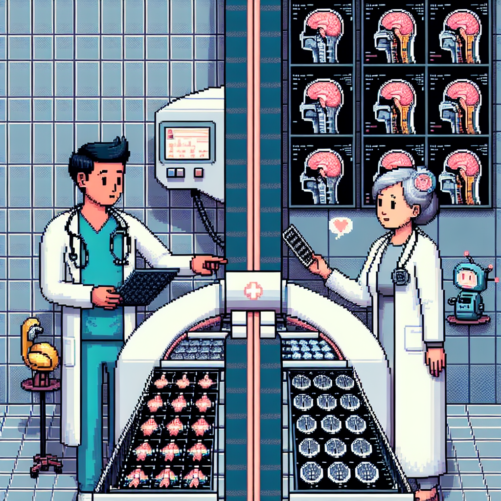

Why AI will never replace the radiologist
In recent years, machine learning has made significant advancements in various fields, including radiology. With the ability to analyze large amounts of medical data quickly and accurately, many believe that AI has the potential to replace radiologists in the future. However, I strongly believe that AI will never fully replace the radiologist, and in this blog post, I will explain why.
Firstly, while AI algorithms can analyze medical images and detect abnormalities, they lack the ability to interpret the context and make complex decisions. Radiologists not only rely on the images but also consider the patient's medical history, symptoms, and other relevant information to make an accurate diagnosis. This human touch is crucial in providing personalized and comprehensive care to patients.
Secondly, radiology is not just about interpreting images; it also involves communication and collaboration with other healthcare professionals. Radiologists often consult with clinicians, surgeons, and other specialists to ensure the best possible patient outcomes. AI algorithms cannot replicate this level of collaboration and teamwork, which is essential in the field of radiology.
Furthermore, radiologists possess years of training and experience, which allows them to detect subtle nuances and patterns in medical images that AI algorithms may miss. These subtle findings can be crucial in diagnosing certain conditions or guiding further investigations. AI may be able to detect obvious abnormalities, but it may struggle with more complex cases that require a deep understanding of anatomy and pathology.
Lastly, the role of a radiologist extends beyond diagnosis. They also play a vital role in counseling and providing support to patients. Radiologists often explain the imaging findings to patients, answer their questions, and alleviate their concerns. This human connection and empathy are invaluable in healthcare and cannot be replaced by AI.
In conclusion, while AI has undoubtedly revolutionized the field of radiology, it will never fully replace the radiologist. The combination of human expertise, collaboration, and empathy is irreplaceable in providing high-quality patient care. AI should be seen as a tool to augment the radiologist's abilities rather than replace them.